Social
What each story becomes on Instagram, Facebook, X and WhatsApp: a four-slide carousel and a post written for each platform. Scroll the slides sideways.
Night Watch
WhatsApp
*Night Watch* · Wednesday 14 October Welcome to Night Watch on Sweet Melodies 94.3 FM, bringing you peace, reflection, and key news to close your day. _“I will lift up mine eyes unto the hills, from whence cometh my help. My help cometh from the LORD, which made heaven and earth.”_ — Psalms 121:1-2 1. *Pastor Jerry Eze leads NSPPD UK Prayer Conference 2026* Pastor Jerry Eze has led thousands of worshippers in prayer and praise at the NSPPD UK Prayer Conference 2026. https://colabourers58-hue.github.io/sweet-melodies-news/story/pastor-jerry-eze-leads-nsppd-uk-prayer-conference-2026/ 2. *Theophilus Sunday holds Day 2 of Tarry Nyanya 2026* Minister Theophilus Sunday hosted day two of Tarry Nyanya 2026, advancing global gospel worship outreach. https://colabourers58-hue.github.io/sweet-melodies-news/story/theophilus-sunday-holds-day-2-of-tarry-nyanya-2026/ 3. *Netflix cuts 1,000 global jobs as streaming growth slows* Netflix is laying off 1,000 employees globally as streaming growth slows and viewer habits shift toward free platforms. https://colabourers58-hue.github.io/sweet-melodies-news/story/netflix-cuts-1000-global-jobs-as-streaming-growth-slows/ 4. *KNUST announces new reopening dates for 2026 academic year* KNUST has announced new reopening dates, sending students and families into quick travel preparations for Kumasi. https://colabourers58-hue.github.io/sweet-melodies-news/story/knust-announces-new-reopening-dates-for-2026-academic-year/ 5. *GRA Clarifies Digital VAT System Will Not Add New Tax* The Ghana Revenue Authority clarified that the new digital VAT system will not introduce additional taxes for consumers. https://colabourers58-hue.github.io/sweet-melodies-news/story/gra-clarifies-digital-vat-system-will-not-add-new-tax/ *Let us pray* • We pray for traveling mercy and safe journeys for all KNUST students and families returning to campus. • Lord, comfort and grant new opportunities to tech workers affected by recent global job cuts. • May God grant wisdom to our leaders and peace to every household across Ghana tonight. Listen live: Sweet Melodies 94.3 FM
New Music Friday
gospel-top-10
Pastor Jerry Eze leads NSPPD UK Prayer Conference 2026
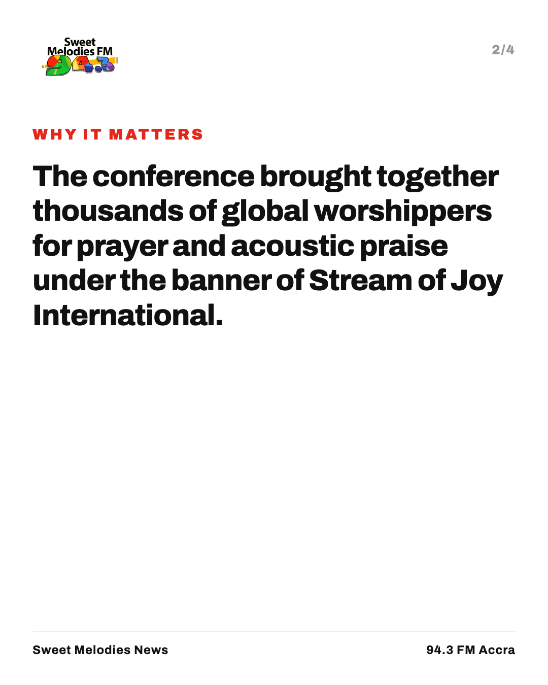
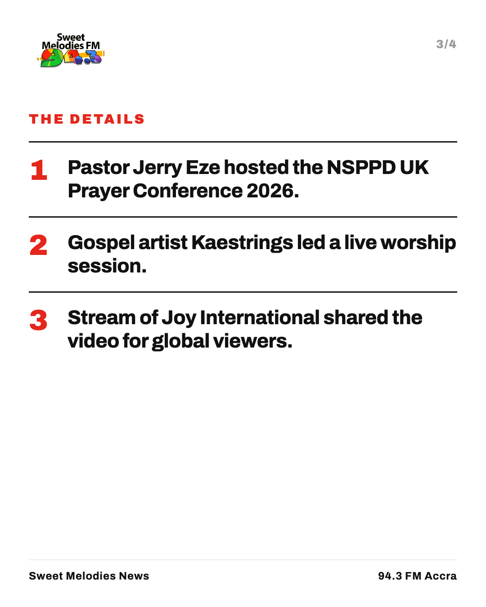

X
Pastor Jerry Eze and Kaestrings led worship at the NSPPD UK Prayer Conference 2026. Watch the full session now! https://colabourers58-hue.github.io/sweet-melodies-news/story/pastor-jerry-eze-leads-nsppd-uk-prayer-conference-2026/
Instagram
Stream of Joy International hosted the NSPPD UK Prayer Conference 2026, featuring a worship session with Kaestrings and Pastor Jerry Eze. #NSPPD #PastorJerryEze #Kaestrings
Facebook
Stream of Joy International has shared video from the NSPPD United Kingdom Prayer Conference 2026, led by Pastor Jerry Eze with live worship by Kaestrings. Catch the full session online! https://colabourers58-hue.github.io/sweet-melodies-news/story/pastor-jerry-eze-leads-nsppd-uk-prayer-conference-2026/
Whatsapp
*Pastor Jerry Eze leads NSPPD UK Prayer Conference 2026* Stream of Joy International hosted the NSPPD UK Prayer Conference 2026 featuring worship with Kaestrings. Watch here: https://colabourers58-hue.github.io/sweet-melodies-news/story/pastor-jerry-eze-leads-nsppd-uk-prayer-conference-2026/
Theophilus Sunday holds Day 2 of Tarry Nyanya 2026
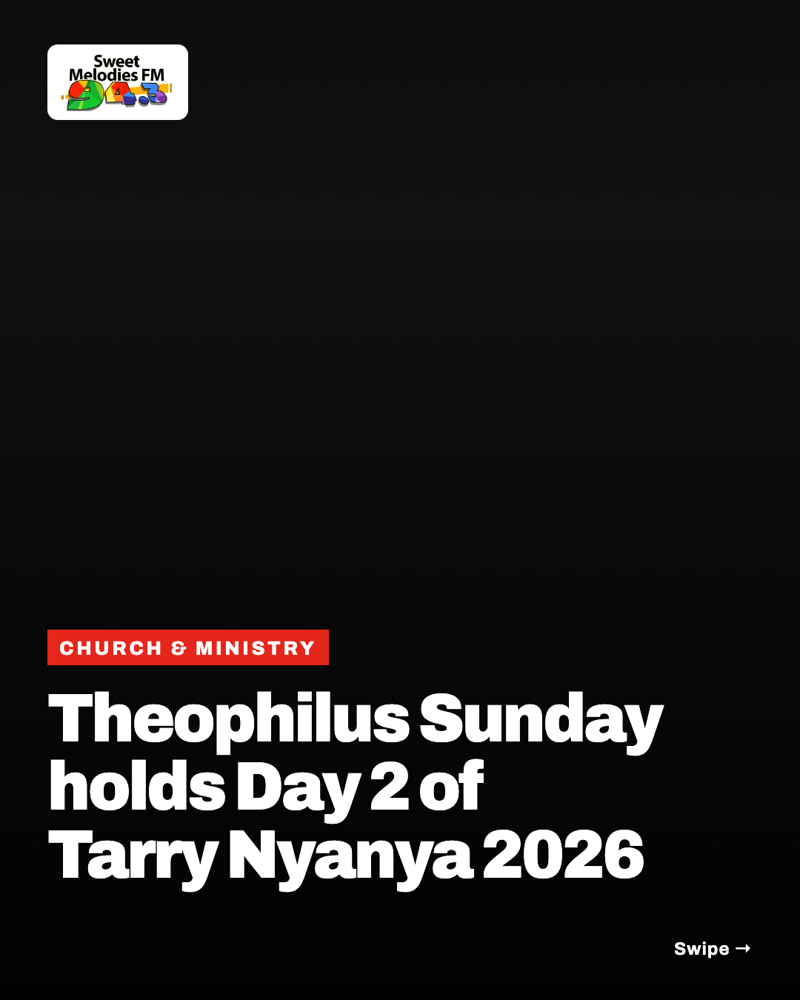
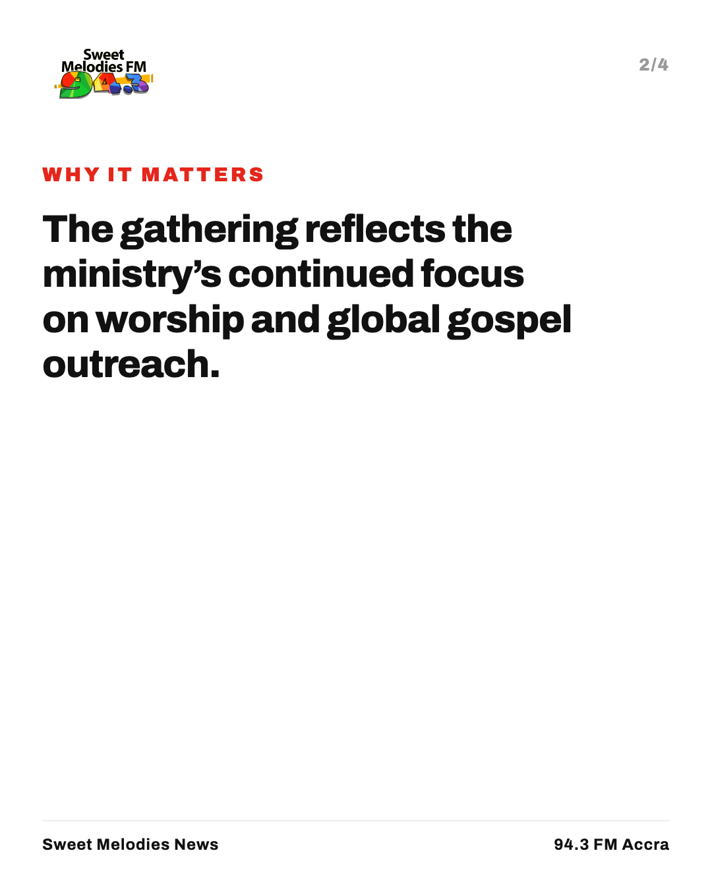
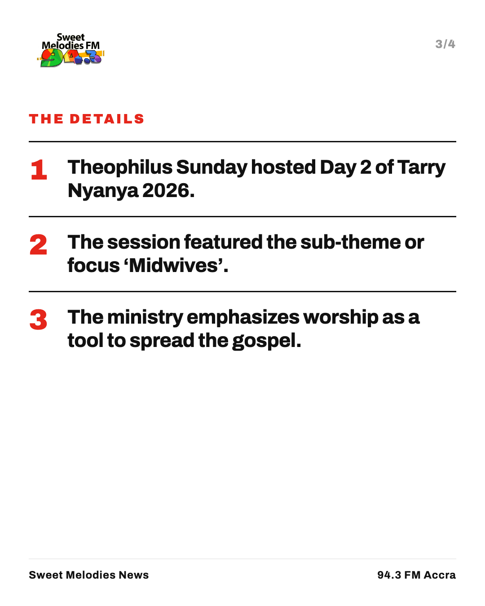

X
Gospel minister Theophilus Sunday has hosted Day 2 of Tarry Nyanya 2026, tagged 'Midwives.' https://colabourers58-hue.github.io/sweet-melodies-news/story/theophilus-sunday-holds-day-2-of-tarry-nyanya-2026/
Instagram
Gospel minister Theophilus Sunday hosted Day 2 of Tarry Nyanya 2026, tagged 'Midwives.' Full service available to watch online.
Facebook
Gospel minister Theophilus Sunday has held Day 2 of the Tarry Nyanya 2026 programme, tagged 'Midwives.' The worship service forms part of the ministry's mission to spread the gospel worldwide. https://colabourers58-hue.github.io/sweet-melodies-news/story/theophilus-sunday-holds-day-2-of-tarry-nyanya-2026/
Whatsapp
*Theophilus Sunday holds Day 2 of Tarry Nyanya 2026* Gospel minister Theophilus Sunday has hosted Day 2 of Tarry Nyanya 2026. Read more: https://colabourers58-hue.github.io/sweet-melodies-news/story/theophilus-sunday-holds-day-2-of-tarry-nyanya-2026/
Pastor Nathaniel Bassey Leads Day 3 of October 2026 Hallelujah Challenge
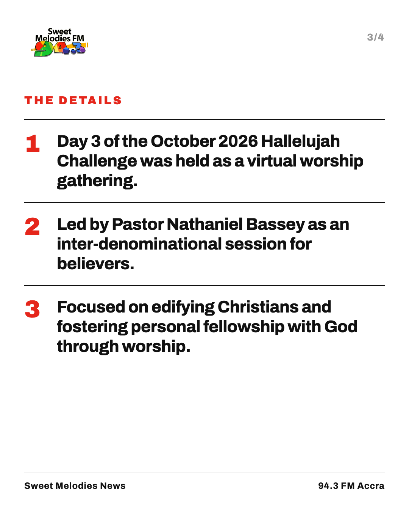

X
Pastor Nathaniel Bassey leads Day 3 of the October 2026 Hallelujah Challenge virtual worship session. https://colabourers58-hue.github.io/sweet-melodies-news/story/pastor-nathaniel-bassey-leads-day-3-of-october-2026-hallelujah-challen/
Instagram
Pastor Nathaniel Bassey leads Day 3 of the October 2026 Hallelujah Challenge, an inter-denominational virtual gathering aimed at edifying believers through music and the Holy Spirit.
Facebook
Pastor Nathaniel Bassey has hosted Day 3 of the October 2026 Hallelujah Challenge. The inter-denominational virtual fellowship brings Christians together online for spontaneous music worship. https://colabourers58-hue.github.io/sweet-melodies-news/story/pastor-nathaniel-bassey-leads-day-3-of-october-2026-hallelujah-challen/
Whatsapp
*Pastor Nathaniel Bassey Leads Day 3 of October 2026 Hallelujah Challenge* Read more: https://colabourers58-hue.github.io/sweet-melodies-news/story/pastor-nathaniel-bassey-leads-day-3-of-october-2026-hallelujah-challen/
Netflix cuts 1,000 global jobs as streaming growth slows
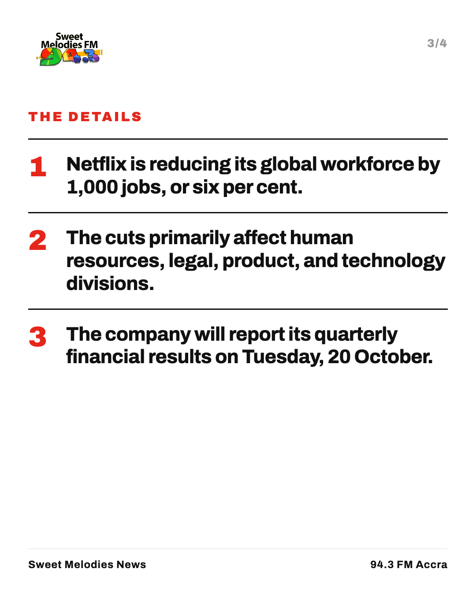

X
Netflix is cutting 1,000 global jobs, about 6% of its workforce, mainly across HR, legal, product, and tech teams as streaming competition increases. https://colabourers58-hue.github.io/sweet-melodies-news/story/netflix-cuts-1000-global-jobs-as-streaming-growth-slows/
Instagram
Netflix is cutting 1,000 jobs globally, representing six per cent of its workforce. The reductions mainly impact human resources, legal, product, and technology departments. The move comes as competition grows from free platforms like YouTube and TikTok. Full story: link in bio #Netflix #TechNews #BusinessNews #Streaming #GlobalJobs Photo: BBC World.
Facebook
Netflix is laying off 1,000 employees globally, equal to roughly six per cent of its total workforce. The reductions target human resources, legal, product, and technology departments as streaming platforms face shifting viewer habits. Read the full update on our website. https://colabourers58-hue.github.io/sweet-melodies-news/story/netflix-cuts-1000-global-jobs-as-streaming-growth-slows/
Whatsapp
*Netflix cuts 1,000 jobs globally* Streaming service reduces workforce by 6% across tech, legal, and HR divisions. https://colabourers58-hue.github.io/sweet-melodies-news/story/netflix-cuts-1000-global-jobs-as-streaming-growth-slows/
Kenya confirms second Ebola case in relative of first patient
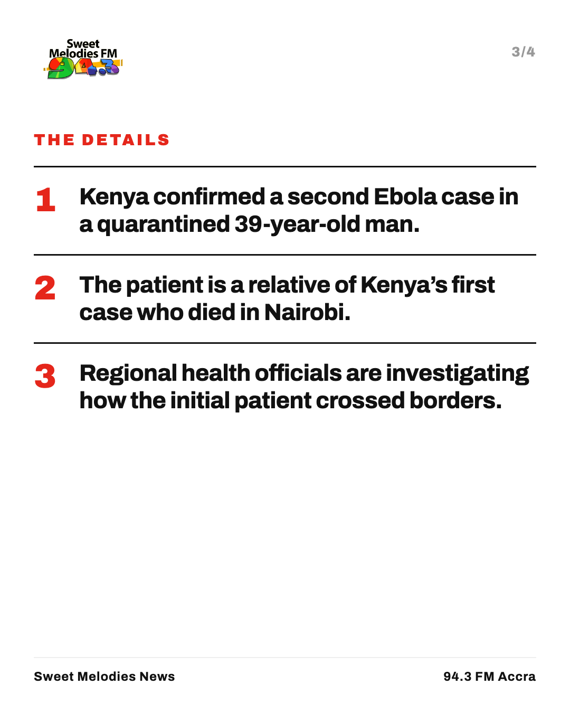

X
Kenya has confirmed a second Ebola case involving a 39-year-old man quarantined after exposure to the first patient. Health officials say he is in treatment at a designated facility. #Ebola https://colabourers58-hue.github.io/sweet-melodies-news/story/kenya-confirms-second-ebola-case-in-relative-of-first-patient/
Instagram
Kenya confirms a second case of Ebola in Nairobi. The 39-year-old patient was already in quarantine after exposure to the first case. Health authorities say he is receiving care at a designated treatment facility. Regional officials are reviewing cross-border health controls. Full story: link in bio #Kenya #Ebola #HealthNews #Africa #SweetMelodiesFM Photo: Al Jazeera.
Facebook
Kenya's Ministry of Health has confirmed a second Ebola infection in a 39-year-old man who was already under quarantine in Nairobi. The patient is a close relative of the nation's first case, who passed away last week. Regional health agencies are now examining border controls to understand how the virus entered the country. Read the full story on our website. https://colabourers58-hue.github.io/sweet-melodies-news/story/kenya-confirms-second-ebola-case-in-relative-of-first-patient/
Whatsapp
*Kenya confirms second Ebola case* Health authorities report a 39-year-old quarantined relative of the first patient tested positive in Nairobi. Regional officials are reviewing cross-border health controls. https://colabourers58-hue.github.io/sweet-melodies-news/story/kenya-confirms-second-ebola-case-in-relative-of-first-patient/
KNUST announces new reopening dates for 2026 academic year
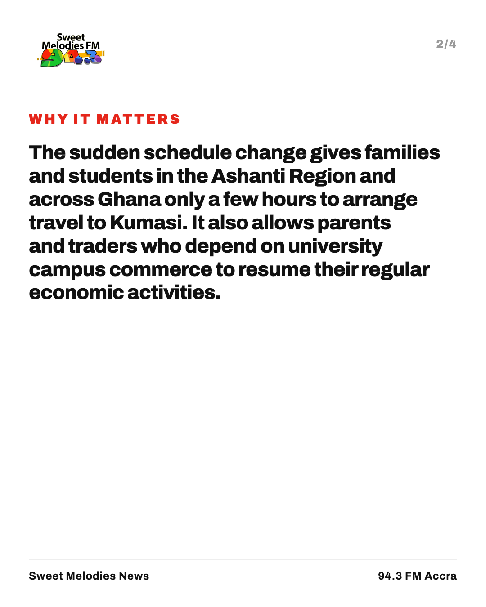
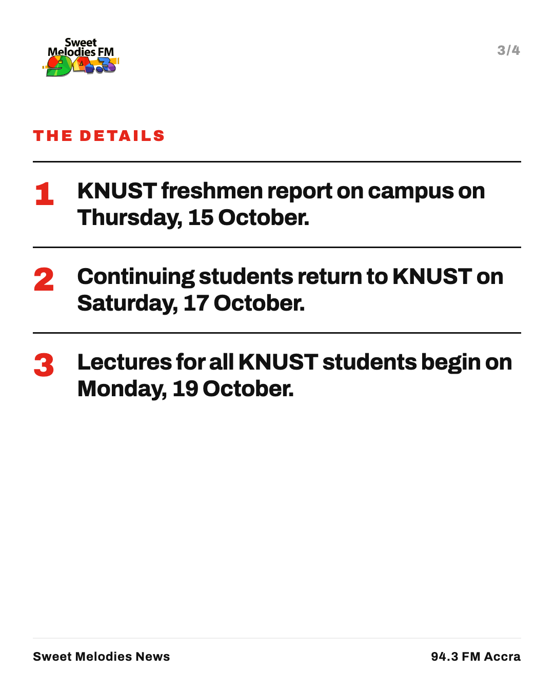

X
KNUST has announced revised reopening dates for the 2026/2027 academic year. Freshmen report on October 15, continuing students return October 17, and lectures start October 19. #KNUST https://colabourers58-hue.github.io/sweet-melodies-news/story/knust-announces-new-reopening-dates-for-2026-academic-year/
Instagram
KNUST announces revised reopening dates for the 2026 academic year. Freshmen report Thursday, 15 October, while continuing students return on Saturday, 17 October. Lectures across all faculties begin on Monday, 19 October following directives from GTEC. Full story: link in bio #KNUST #EducationGhana #Kumasi #GhanaNews #SweetMelodiesFM Photo: Yen.com.gh.
Facebook
The Kwame Nkrumah University of Science and Technology has announced revised reopening dates for the 2026/2027 academic year. Freshmen are expected on campus on Thursday, 15 October, and continuing students on Saturday, 17 October. Read the full update and lecture schedules on our website. https://colabourers58-hue.github.io/sweet-melodies-news/story/knust-announces-new-reopening-dates-for-2026-academic-year/
Whatsapp
*KNUST announces new reopening dates* Freshmen report 15 October and continuing students return 17 October. Lectures start 19 October. Read the full details: https://colabourers58-hue.github.io/sweet-melodies-news/story/knust-announces-new-reopening-dates-for-2026-academic-year/
Petrol and diesel prices expected to fall as LPG surges

X
Petrol and diesel prices in Ghana are projected to drop slightly from Oct 16, while LPG cooking gas faces an 18.5% hike, according to oil marketing projections. #GhanaFuel https://colabourers58-hue.github.io/sweet-melodies-news/story/petrol-and-diesel-prices-expected-to-fall-as-lpg-surges/
Instagram
Fuel prices in Ghana are set to shift from Friday, 16 October. Petrol and diesel will drop marginally at the pump, providing small relief to drivers. However, cooking gas will jump by 18.5 per cent, increasing costs for households and food sellers. Full story: link in bio #GhanaNews #FuelPrices #GhanaEconomy #LPGGas #Accra Photo: MyJoyOnline.
Facebook
Drivers across Ghana will see minor relief at the pumps from Friday, 16 October, as petrol and diesel prices drop slightly. However, families and food sellers using cooking gas will face higher costs as LPG prices surge by 18.5 per cent. Read the full update on what is driving these price changes on our website. https://colabourers58-hue.github.io/sweet-melodies-news/story/petrol-and-diesel-prices-expected-to-fall-as-lpg-surges/
Whatsapp
*Petrol and diesel prices to fall as LPG surges* Ghanaian pumps will see slight price cuts for petrol and diesel from Oct 16, but cooking gas jumps 18.5%. https://colabourers58-hue.github.io/sweet-melodies-news/story/petrol-and-diesel-prices-expected-to-fall-as-lpg-surges/
Abass Osabutey enters race for NDC Deputy National Organiser
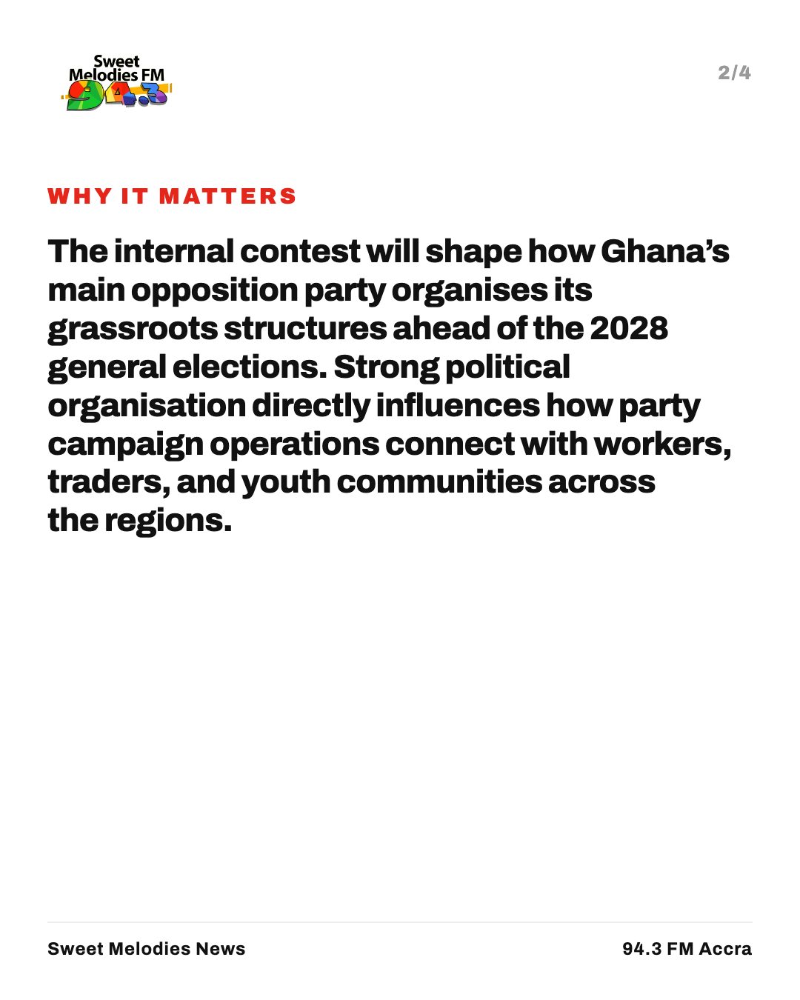
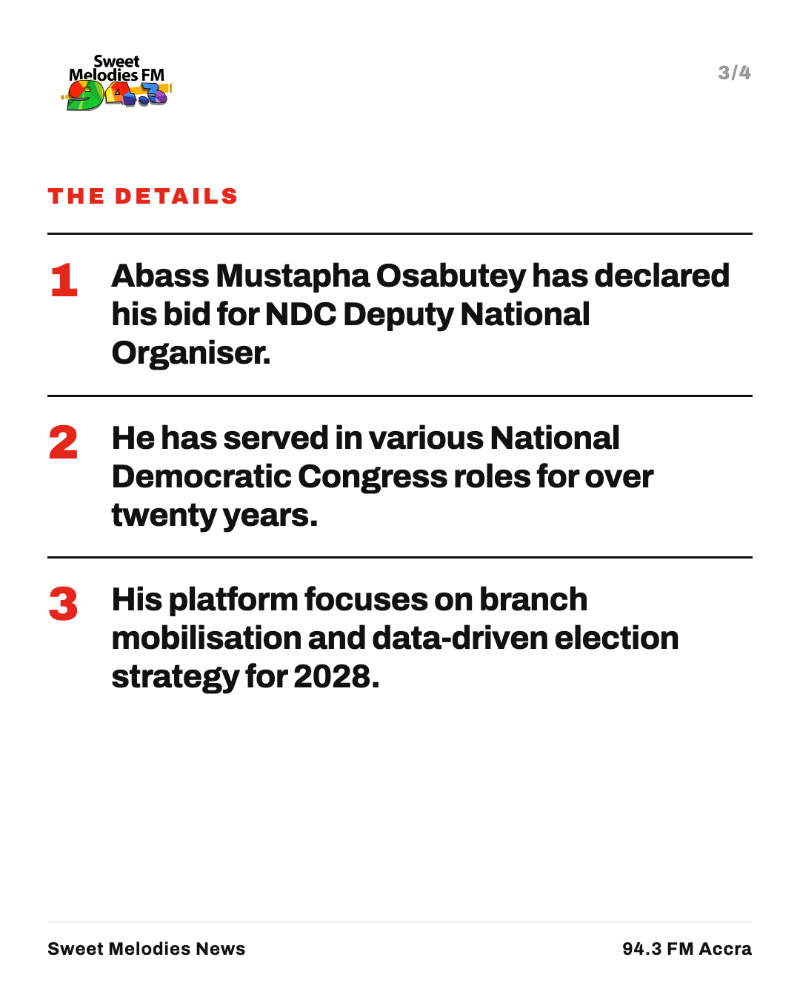

X
Abass Mustapha Osabutey has declared his bid for NDC Deputy National Organiser, promising a data-driven strategy ahead of the 2028 elections. https://colabourers58-hue.github.io/sweet-melodies-news/story/abass-osabutey-enters-race-for-ndc-deputy-national-organiser/
Instagram
Security consultant Abass Mustapha Osabutey has declared his candidacy for NDC Deputy National Organiser. He says his focus is on rebuilding branch structures and using data-driven operations ahead of the 2028 general elections. Mr Osabutey has served the party for over twenty years in various regional and constituency roles. Full story: link in bio #GhanaPolitics #NDC #GhanaElections #GhanaNews Photo: 3News.
Facebook
Security strategist Abass Mustapha Osabutey has formally declared his intention to contest for the Deputy National Organiser post in the National Democratic Congress. With over twenty years of service within the party, he says his campaign will focus on strengthening branch structures and data-driven organisation ahead of 2028. Read the full details on our website. https://colabourers58-hue.github.io/sweet-melodies-news/story/abass-osabutey-enters-race-for-ndc-deputy-national-organiser/
Whatsapp
*Abass Osabutey declares bid for NDC Deputy National Organiser* Security strategist Abass Osabutey has joined the race for NDC Deputy National Organiser, pledging to rebuild branch structures ahead of 2028. Read the full story: https://colabourers58-hue.github.io/sweet-melodies-news/story/abass-osabutey-enters-race-for-ndc-deputy-national-organiser/
Ghanaian banks to collect 20 per cent digital tax from October 15
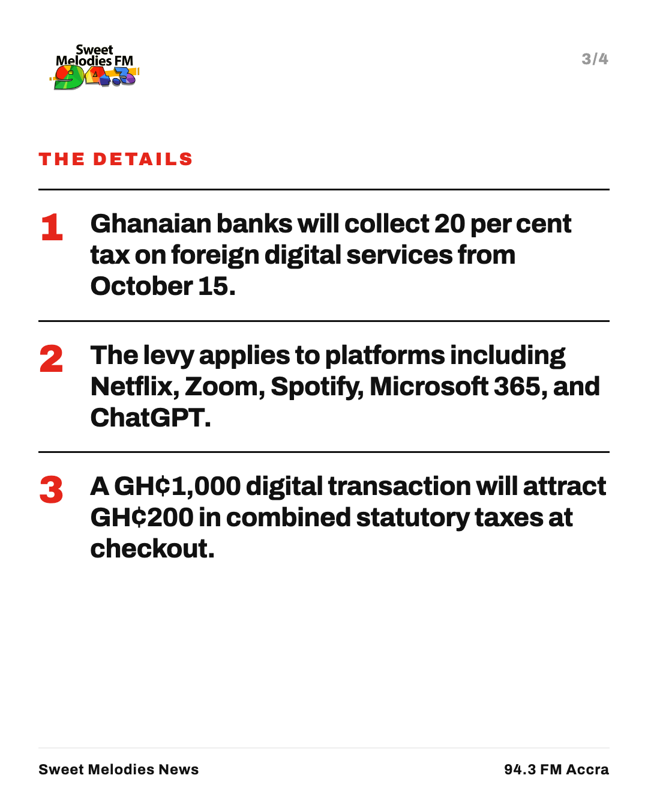

X
Ghanaian banks will collect a 20 per cent tax on foreign digital services including Netflix, Zoom, and ChatGPT starting 15 October. https://colabourers58-hue.github.io/sweet-melodies-news/story/ghanaian-banks-to-collect-20-per-cent-digital-tax-from-october-15/
Instagram
Banks in Ghana will begin collecting a 20 per cent tax on foreign digital subscriptions starting 15 October. The charge applies to debit card payments for services like Netflix, Zoom, Spotify, and ChatGPT. The tax combines VAT, GETFund, and NHIL levies collected directly at checkout. Full story: link in bio #GhanaNews #DigitalTax #GhanaBanks #TaxUpdates Photo: Yen.com.gh.
Facebook
Ghanaian banks will begin deducting a 20 per cent tax on foreign digital subscriptions from Thursday, 15 October. The automated charge affects online payments for services such as Netflix, Spotify, Microsoft 365, Zoom, and ChatGPT. Read the full details on how this affects your monthly bill on our website. https://colabourers58-hue.github.io/sweet-melodies-news/story/ghanaian-banks-to-collect-20-per-cent-digital-tax-from-october-15/
Whatsapp
*Ghanaian banks to collect 20% tax on foreign digital services* Starting 15 October, debit card payments for Netflix, Zoom, ChatGPT, and other overseas tools will attract a 20 per cent statutory tax. Read full story: https://colabourers58-hue.github.io/sweet-melodies-news/story/ghanaian-banks-to-collect-20-per-cent-digital-tax-from-october-15/
Theophilus Sunday and 1Spirit Hold Day Two of Tarry Abuja
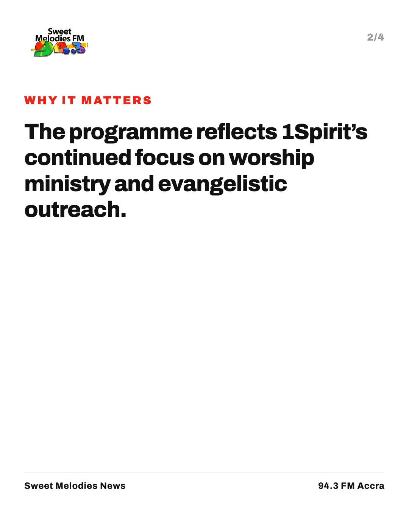
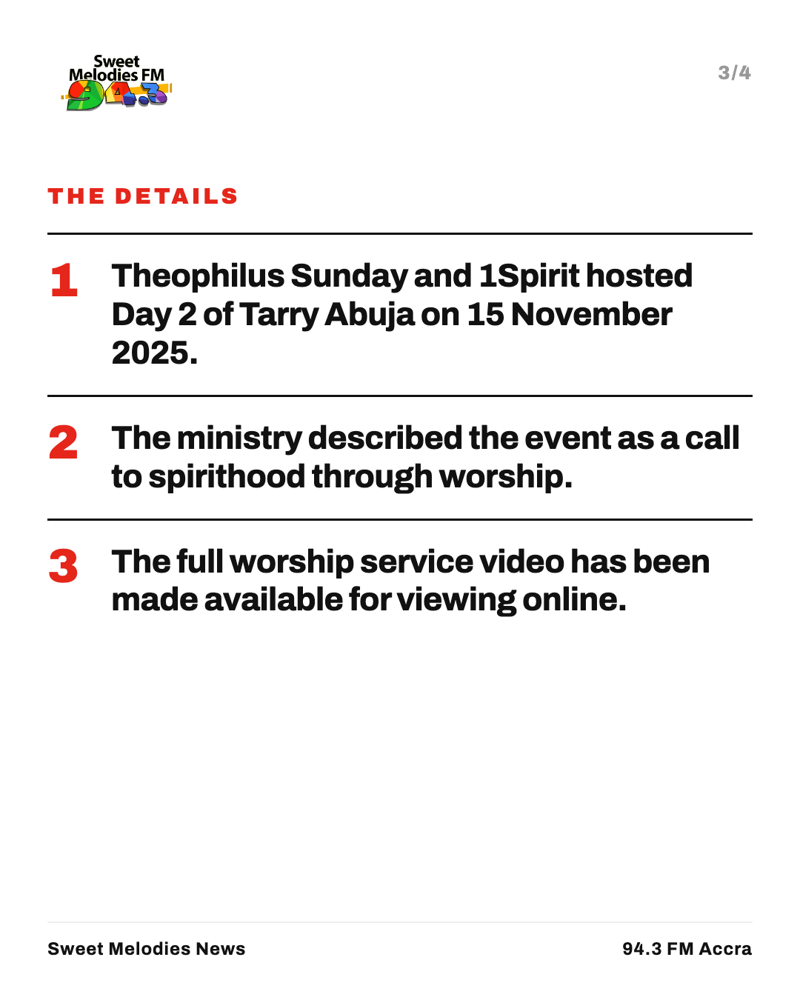

X
Theophilus Sunday and 1Spirit held Day 2 of Tarry Abuja on 15 November 2025. Watch the full service online. https://colabourers58-hue.github.io/sweet-melodies-news/story/theophilus-sunday-and-1spirit-hold-day-two-of-tarry-abuja/
Instagram
Day 2 of Tarry Abuja with Theophilus Sunday and 1Spirit took place on 15 November 2025. Watch the full session online now.
Facebook
Gospel minister Theophilus Sunday and 1Spirit hosted Day 2 of Tarry Abuja on 15 November 2025. The full worship video is available to watch. https://colabourers58-hue.github.io/sweet-melodies-news/story/theophilus-sunday-and-1spirit-hold-day-two-of-tarry-abuja/
Whatsapp
*Theophilus Sunday and 1Spirit Hold Day Two of Tarry Abuja* Read about the Day 2 session of Tarry Abuja and watch the full video. {https://colabourers58-hue.github.io/sweet-melodies-news/story/theophilus-sunday-and-1spirit-hold-day-two-of-tarry-abuja/}Ohemaa Mercy Ministries holds Tehillah 2025: The Revival Experience
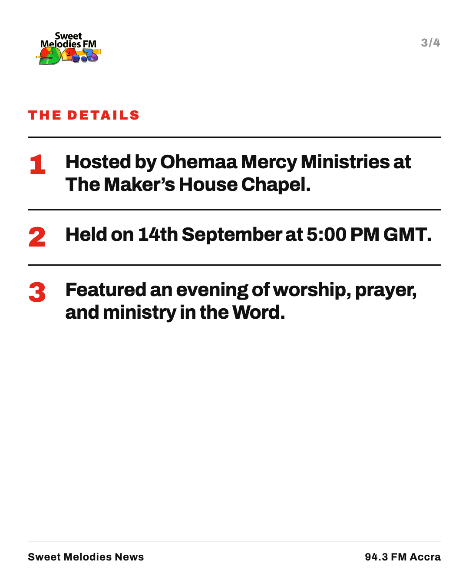

X
Ohemaa Mercy Ministries has hosted Tehillah 2025: The Revival Experience at The Maker’s House Chapel. Catch up on the service online. #Tehillah2025 https://colabourers58-hue.github.io/sweet-melodies-news/story/ohemaa-mercy-ministries-holds-tehillah-2025-the-revival-experience/
Instagram
Ohemaa Mercy Ministries hosted Tehillah 2025: The Revival Experience at The Maker’s House Chapel on 14th September. The evening featured dedicated worship and the Word.
Facebook
Ohemaa Mercy Ministries held Tehillah 2025: The Revival Experience at The Maker’s House Chapel on Sunday, 14th September, bringing worshippers together for a time of praise and the Word. https://colabourers58-hue.github.io/sweet-melodies-news/story/ohemaa-mercy-ministries-holds-tehillah-2025-the-revival-experience/
Whatsapp
*Ohemaa Mercy Ministries holds Tehillah 2025: The Revival Experience* Ohemaa Mercy Ministries hosted Tehillah 2025 at The Maker’s House Chapel on 14th September. You can watch the full worship session online here: https://colabourers58-hue.github.io/sweet-melodies-news/story/ohemaa-mercy-ministries-holds-tehillah-2025-the-revival-experience/
Pastor Nathaniel Bassey Leads Day 2 of October 2026 Hallelujah Challenge
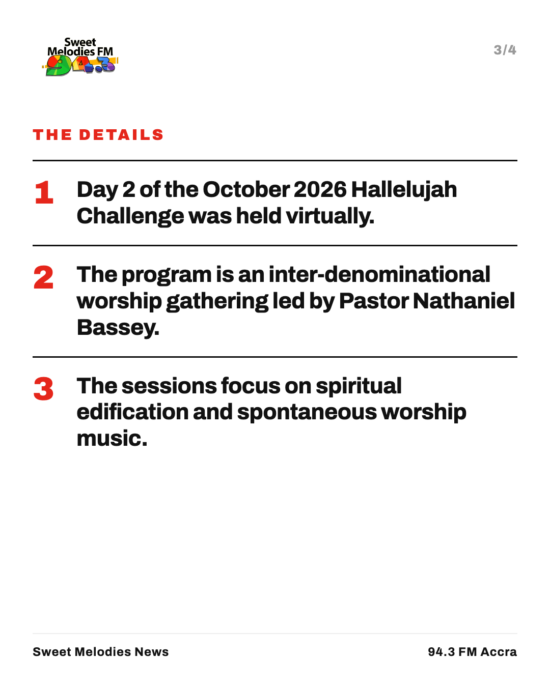

X
Day 2 of the October 2026 Hallelujah Challenge with Pastor Nathaniel Bassey is available to watch online. {link} https://colabourers58-hue.github.io/sweet-melodies-news/story/pastor-nathaniel-bassey-leads-day-2-of-october-2026-hallelujah-challen/Instagram
Day 2 of the October 2026 Hallelujah Challenge with Pastor Nathaniel Bassey is out now. Watch the full worship session online.
Facebook
Believers joined Pastor Nathaniel Bassey online for Day 2 of the October 2026 Hallelujah Challenge. Watch the full worship service below. https://colabourers58-hue.github.io/sweet-melodies-news/story/pastor-nathaniel-bassey-leads-day-2-of-october-2026-hallelujah-challen/
Whatsapp
*Pastor Nathaniel Bassey Leads Day 2 of October 2026 Hallelujah Challenge* Catch up on the virtual worship gathering here: https://colabourers58-hue.github.io/sweet-melodies-news/story/pastor-nathaniel-bassey-leads-day-2-of-october-2026-hallelujah-challen/